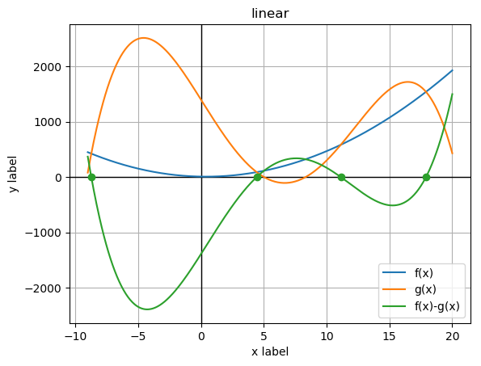

Report
Polynomial equation was solved with such input data
Data for function f(t)
| Index | A coefficient |
|---|
| 0 | 5.0 |
| 1 | -4.0 |
| 2 | 8.0 |
Data for function g(t)
| Index | X point | Y point |
|---|
| 0 | 5.0 | 3.0 |
| 1 | 9.0 | 100.0 |
| 2 | 10.0 | 300.0 |
| 3 | -9.0 | 80.0 |
| 4 | 20.0 | 430.0 |
Interval values for searching the root from a: -10 to b: 30
Equation has such roots:
-8.719444274902344 0.005161900074256209
4.439140319824219 -0.0012558188080902255
11.129463195800781 -0.00046195942513804766
17.90856170654297 0.0014663526710592123
Image report
